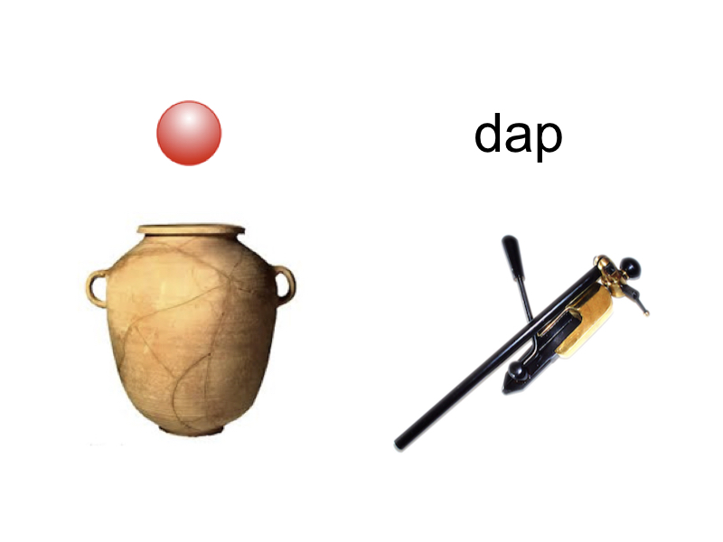
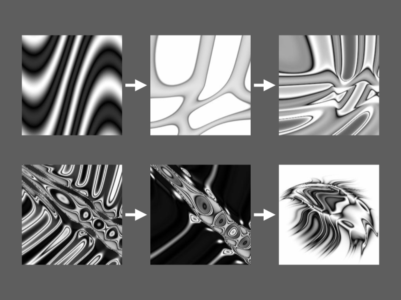
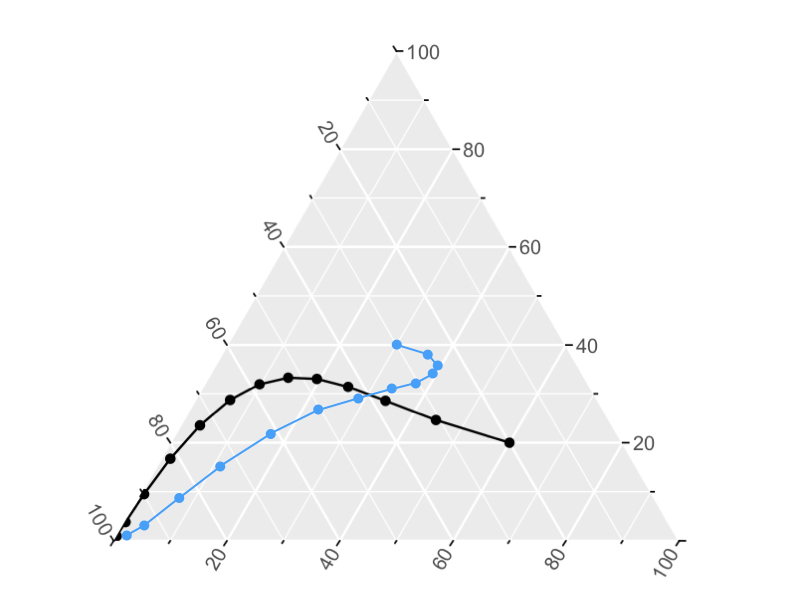

Research
Vanessa Ferdinand
Research Fellow in Computational Cognitive Science
University of Melbourne
Room 614
Redmond Barry Building
Parkville, VIC 3010
Australia
+61 383442682
vanessa.ferdinand@unimelb.edu.au
I research the dynamics and mechanics of cultural evolution.
If you’re interested in biological evolution, and want to understand its mechanisms of inheritance - you should be a geneticist. But if you’re interested in cultural evolution, and want to understand its mechanisms of inheritance - what should you do? Cognitive science!Cultural artifacts, such as languages, music, art, and technologies, change as they pass from mind to mind. These artifacts can not propagate themselves - they require a cognitive system to perceive, process, and (re)produce them.
What happens in cognition when an artifact is being reproduced?
Which structures in the input get causally transferred to the output?
What information is preserved, destroyed, or transformed along the way?
When do cognitive systems support high-fidelity inheritance?
And when do the biases of cognitive systems drive evolution by themselves?
My research addresses these questions by combining computational models, experiments, and information theory to understand the inheritance systems that make cultural evolution possible.

The cognitive roots of regularization in language

Two levels of selection in the picbreeder corpus

The coevolution of ideas and artifacts